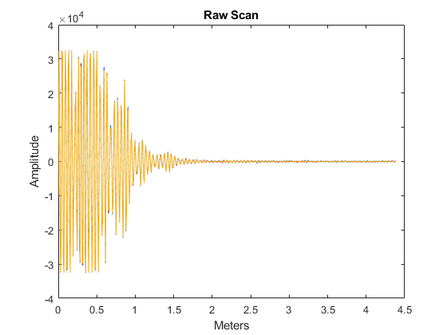
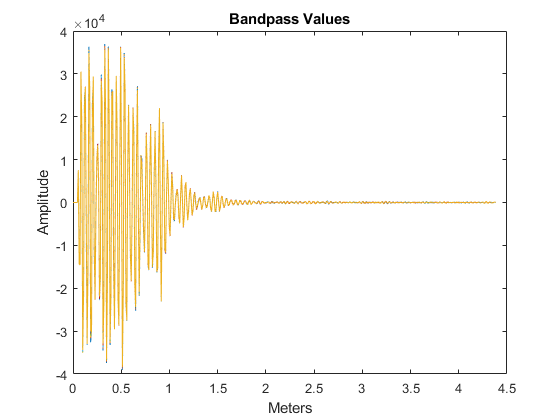
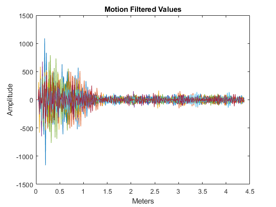
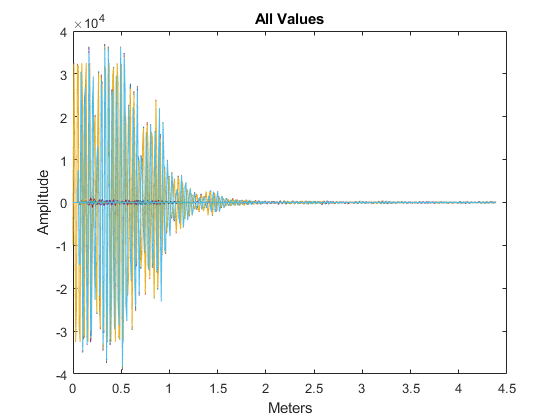

% plotMrmRetLog.m % This script prompts the user for a MRM-RET logfile, reads, parses, and % produces a "waterfall plot" of the motion filtered scans and detection lists % in the logfile clear all; close all; clc %#ok<*CLALL>
%dnm = '.'; fnm = 'MRM_002.csv';
[fnm,dnm] = uigetfile('*.csv');
fprintf('Reading logfile %s\n',fullfile(dnm,fnm));
[cfg,req,scn,det] = readMrmRetLog(fullfile(dnm,fnm));
Reading logfile C:\Users\austinsbrown\Dropbox\ee384\lab7\RetLog_002.csv(only motion filtered is used)
rawscansI = find([scn.Nfilt] == 1); rawscansV = reshape([scn(rawscansI).scn],[],length(rawscansI))'; % band-pass filtered scans bpfscansI = find([scn.Nfilt] == 2); bpfscansV = reshape([scn(bpfscansI).scn],[],length(bpfscansI))'; % motion filtered scans mfscansI = find([scn.Nfilt] == 4); mfscansV = reshape([scn(mfscansI).scn],[],length(mfscansI))';
Tbin = 32/(512*1.024); % ns
T0 = 0; % ns
c = 0.29979; % m/ns
Rbin = c*(Tbin*(0:size(mfscansV,2)-1) - T0)/2; % Range Bins in meters
figure
plot(Rbin, rawscansV)
title('Raw Scan'), xlabel('Meters'), ylabel('Amplitude')
figure
plot(Rbin, bpfscansV)
title('Bandpass Values'), xlabel('Meters'), ylabel('Amplitude')
figure
plot(Rbin, mfscansV)
title('Motion Filtered Values'), xlabel('Meters'), ylabel('Amplitude')
figure
plot(Rbin, rawscansV, Rbin, bpfscansV, Rbin, mfscansV)
title('All Values'), xlabel('Meters'), ylabel('Amplitude')   